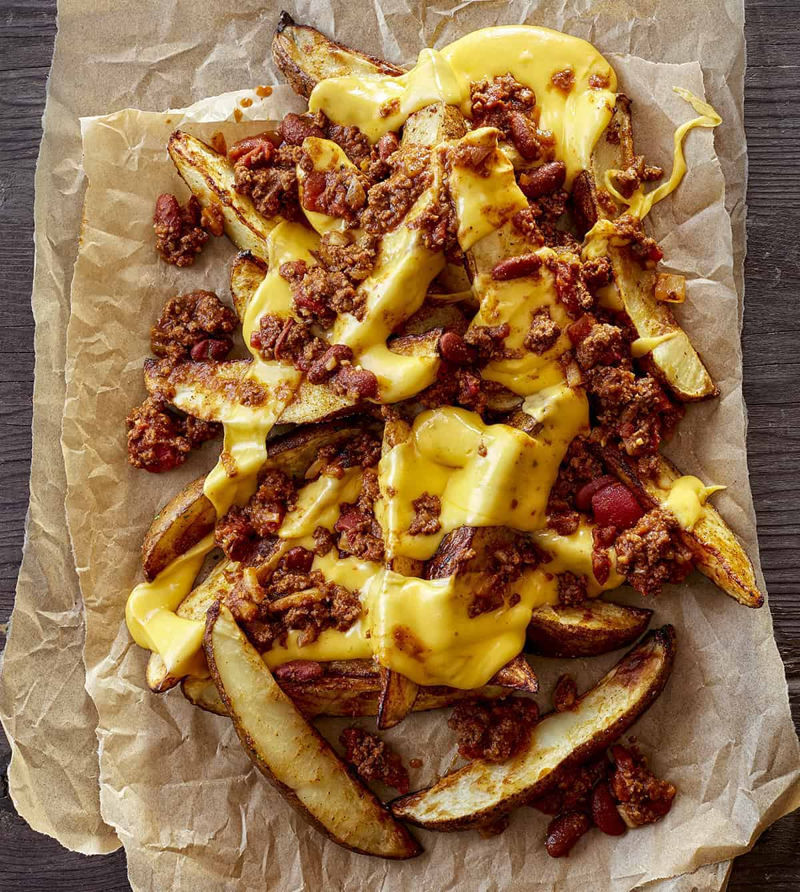

Loaded Fries recipe
Loaded Chilli Fries

Taken from I AM BAKER
FRIES
- 4 russet potatoes, scrubbed and sliced lengthwise into wedges
- 1/4 cup olive oil
- 1 teaspoon paprika
- 1 teaspoon garlic powder
- 1 tsp onion powder
- 1/2 tsp. ground black pepper
- sea salt, to taste
- 1/2 tsp cayenne pepper
CHILI
- 1 pound ground beef
- 1/2 onion, chopped fine
- 2 cloves garlic
- 1 can (15 ounce)kidney beans, drained
- 1 can (15 ounce) diced tomatoes, undrained
- 1 tablespoon tomato paste
- 1 can (2 ounce) green chilies
- 1 tablespoon cumin
- 1 tablespoon onion powder
- 1 tablespoon garlic powder
- 1 tablespoon chili powder
- salt and pepper to taste
CHEESE SAUCE
- 1 ½ cups (180g) heavy whipping cream
- 3 cups (339g) shredded sharp cheddar
- 2 cups (226g) shredded pepper jack
- 1/4 teaspoon salt
- 1/4 teaspoon onion powder
- 1/4 teaspoon garlic powder
- 1/4 teaspoon chili powder
- Green onion
- Jalapeno
Instructions
FRIES
- Preheat the oven 425°F
- Place the potato wedges in a large bowl and cover with water. Set aside for 15 minutes.
- Toss the potatoes with the olive oil, garlic powder, onion powder, paprika, salt, pepper, and cayenne pepper in a large bowl.
- Add the potato wedges onto a greased baking sheet in a single even layer. Bake 15 minutes until golden brown and fork-tender.
CHILI
- Cook and stir ground beef, chopped onion, and garlic in a skillet over medium heat until crumbly and browned, 5 to 10 minutes.Drain.
- Stir drained ground beef, kidney beans, tomatoes, tomato paste, chili, cumin, onion powder, garlic powder, and chili powder together in a large pot over medium-high heat.
- Bring to a boil, reduce heat to low, and simmer, stirring occasionally, until vegetables are slightly tender and chili is heated through. (15 to 20 minutes)
- Season with salt and ground black pepper to taste.
SAUCE
- In a medium sauce pan, heat up heavy cream until bubbles start to form around the sides. Reduce heat to low and stir in cheeses and seasonings until the cheese is completely melted.
ASSEMBLY
To assemble the dish, spread some cheese on the bottom of the plate, then pile the fries on top of the cheese, add a little more cheese, top with chili, more cheese sauce, and garnish with green onion and jalapeños.